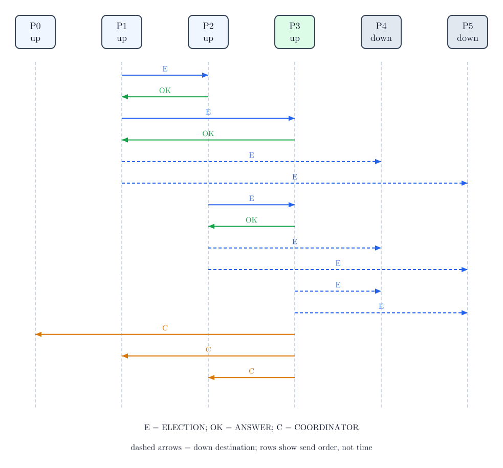
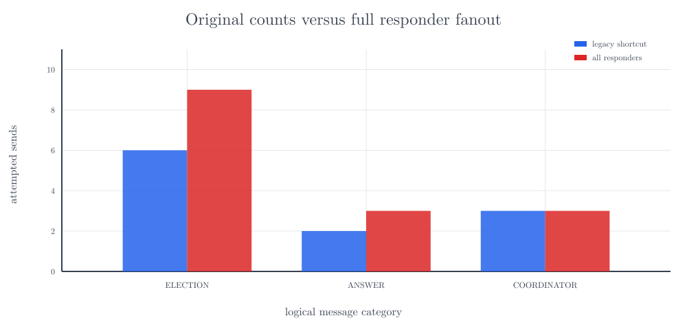
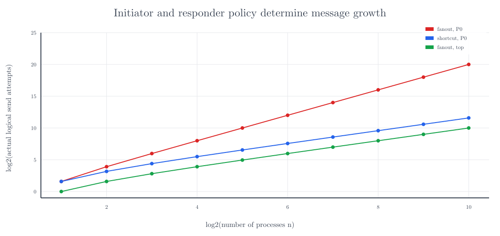

Bully Election: Which Responders Start an Election?
Abstract
The highest live process id becomes coordinator, but that outcome alone does not verify a bully-election message model. The original datamunge function contacts all higher ids and then follows only the highest responder, so it runs at most two candidate phases. We preserve its results and add an explicit static model where every live higher responder starts an election once. The original six-node example then has 11 versus 15 attempted messages. Native C++ supplies both outcomes, actual send records, candidate phases, delivery flags and final learned leaders. The report derives their different message counts and makes no claim to simulate real network timing, partitions or the full original recovery protocol.
Original six processes, with every live higher responder participating
Processes zero through five are known. Processes four and five are down, and process one starts the election. In the full responder model, P1 contacts P2, P3, P4 and P5. Live P2 and P3 each answer and activate once. P2 then contacts P3, P4 and P5; P3 answers again but does not start a duplicate candidate phase. Finally P3 contacts the two down higher ids, receives no answer, and announces itself to P0, P1 and P2.
This is a fixed-liveness, three-message teaching model. Live destinations receive logical messages reliably; failed destinations do not. Candidate processing uses FIFO activation order, with higher targets visited in ascending id order. An answer follows its delivered ELECTION immediately in the recorded sequence. The diagram rows are actual send order, not elapsed time or network rounds.
#include <dm/dm.hpp>
int main() {
std::filesystem::create_directories("build");
const std::vector<char> alive{1,1,1,1,0,0};
const auto trace=dm::algorithms::bully_elect_fanout_trace(6,alive,1);
if (trace.result.leader!=3 || trace.total_messages!=15 || trace.delivered_messages!=9) return 1;
dm::graphics::Diagram diagram(65,1100);
for (int id=0;id<6;++id) {
dm::graphics::DiagramStroke lifeline;lifeline.color={203,213,225};lifeline.dashed=true;
diagram.path({{id*2.6,0.4},{id*2.6,-10}},lifeline);
dm::graphics::DiagramNodeStyle style;style.width=1.2;style.height=1.0;style.padding=7;
style.fill=!alive[id]?dm::RGB{226,232,240}:id==trace.result.leader?dm::RGB{220,252,231}:dm::RGB{239,246,255};
diagram.node(std::format("p{}",id),{id*2.6,1.3},std::format("P{}\n{}",id,alive[id]?"up":"down"),style);
}
std::print("| send index | candidate phase | kind | sender | receiver | delivered |\n"
"| ---: | ---: | :--- | ---: | ---: | :--- |\n");
for (std::size_t i=0;i<trace.messages.size();++i) {
const auto& message=trace.messages[i];
const bool election=message.kind==dm::algorithms::BullyMessageKind::Election;
const bool answer=message.kind==dm::algorithms::BullyMessageKind::Answer;
const std::string label=election?"E":answer?"OK":"C";
const std::string name=election?"ELECTION":answer?"ANSWER":"COORDINATOR";
const double y=-0.65*static_cast<double>(i);
dm::graphics::DiagramStroke arrow;arrow.arrow=true;arrow.dashed=!message.delivered;
arrow.color=election?dm::RGB{37,99,235}:answer?dm::RGB{22,163,74}:dm::RGB{217,119,6};
diagram.path({{message.sender*2.6,y},{message.receiver*2.6,y}},arrow)
.text({(message.sender+message.receiver)*1.3,y+0.19},label,15,arrow.color);
std::print("| {} | {} | {} | {} | {} | {} |\n",i,message.phase,name,message.sender,message.receiver,message.delivered);
}
diagram.text({6.5,-10.6},"E = ELECTION; OK = ANSWER; C = COORDINATOR",16)
.text({6.5,-11.2},"dashed arrows = down destination; rows show send order, not time",16)
.save_svg("build/bully_election_messages.svg");
std::print("\nWinner: P{}; attempted sends: {}; delivered sends: {}.\n",trace.result.leader,trace.total_messages,trace.delivered_messages);
std::print("Final learned leader by id: {}.\n",trace.learned_leader);
}| send index | candidate phase | kind | sender | receiver | delivered |
|---|---|---|---|---|---|
| 0 | 0 | ELECTION | 1 | 2 | true |
| 1 | 0 | ANSWER | 2 | 1 | true |
| 2 | 0 | ELECTION | 1 | 3 | true |
| 3 | 0 | ANSWER | 3 | 1 | true |
| 4 | 0 | ELECTION | 1 | 4 | false |
| 5 | 0 | ELECTION | 1 | 5 | false |
| 6 | 1 | ELECTION | 2 | 3 | true |
| 7 | 1 | ANSWER | 3 | 2 | true |
| 8 | 1 | ELECTION | 2 | 4 | false |
| 9 | 1 | ELECTION | 2 | 5 | false |
| 10 | 2 | ELECTION | 3 | 4 | false |
| 11 | 2 | ELECTION | 3 | 5 | false |
| 12 | 3 | COORDINATOR | 3 | 0 | true |
| 13 | 3 | COORDINATOR | 3 | 1 | true |
| 14 | 3 | COORDINATOR | 3 | 2 | true |
Winner: P3; attempted sends: 15; delivered sends: 9. Final learned leader by id: [3, 3, 3, 3, -1, -1].

Under the model's assumptions, every live id above the initiator is activated by the initiator's first fanout. Each activates only once. The highest live id L has no live higher responder and becomes the unique winner; every lower candidate receives an answer from L and cannot win. All live lower ids learn L from its announcement, including those below the initiator that never became candidates. This argument depends on fixed liveness and successful delivery to live destinations. The code obtains the winner from the actual no-responder phase, rather than scanning for a maximum and attaching invented traffic.
Preserve the original function and explain its different counts
The existing bully_elect API keeps the original highest-responder shortcut.
For this input it processes only P1 and P3. P2 answers P1 but never starts
its own election. Its recorded counts remain 6 ELECTION, 2 ANSWER and
3 COORDINATOR messages, exactly as in the original report. Those are valid
counts for the shortcut; they are not measurements of full responder fanout.
#include <dm/dm.hpp>
int main() {
std::filesystem::create_directories("build");
const std::vector<char> alive{1,1,1,1,0,0};
const auto shortcut=dm::algorithms::bully_elect_trace(6,alive,1);
const auto fanout=dm::algorithms::bully_elect_fanout_trace(6,alive,1);
std::print("| model | candidate phases | ELECTION | ANSWER | COORDINATOR | total attempts | delivered | winner |\n"
"| :--- | ---: | ---: | ---: | ---: | ---: | ---: | ---: |\n");
for (const auto& [name,trace]:std::vector<std::pair<std::string,const dm::algorithms::BullyTrace*>>{
{"legacy shortcut",&shortcut},{"all responders",&fanout}}) {
std::print("| {} | {} | {} | {} | {} | {} | {} | {} |\n",name,trace->rounds.size(),trace->result.election_messages,
trace->result.answer_messages,trace->result.coordinator_messages,trace->total_messages,trace->delivered_messages,trace->result.leader);
}
std::print("\n| model | candidate | highest responder | contacts | answers | newly activated candidates |\n"
"| :--- | ---: | ---: | ---: | ---: | ---: |\n");
for (const auto& [name,trace]:std::vector<std::pair<std::string,const dm::algorithms::BullyTrace*>>{
{"shortcut",&shortcut},{"fanout",&fanout}})
for (const auto& phase:trace->rounds)
std::print("| {} | {} | {} | {} | {} | {} |\n",name,phase.process,phase.highest_responder,
phase.election_messages,phase.answer_messages,phase.candidates_started);
if (shortcut.result.election_messages!=6 || shortcut.result.answer_messages!=2 || shortcut.total_messages!=11 ||
fanout.result.election_messages!=9 || fanout.result.answer_messages!=3 || fanout.total_messages!=15) return 1;
dm::graphics::RPlot::create()
.bars({-0.18,0.82,1.82},{static_cast<double>(shortcut.result.election_messages),static_cast<double>(shortcut.result.answer_messages),
static_cast<double>(shortcut.result.coordinator_messages)},"legacy shortcut",dm::RGB{37,99,235},0.36)
.bars({0.18,1.18,2.18},{static_cast<double>(fanout.result.election_messages),static_cast<double>(fanout.result.answer_messages),
static_cast<double>(fanout.result.coordinator_messages)},"all responders",dm::RGB{220,38,38},0.36)
.x_tick_labels({"ELECTION","ANSWER","COORDINATOR"}).x_limits(-0.7,2.7).y_limits(0,11)
.title("Original counts versus full responder fanout")
.x_label("logical message category").y_label("attempted sends").size(1000,480)
.save_svg("build/bully_election.svg");
}| model | candidate phases | ELECTION | ANSWER | COORDINATOR | total attempts | delivered | winner |
|---|---|---|---|---|---|---|---|
| legacy shortcut | 2 | 6 | 2 | 3 | 11 | 7 | 3 |
| all responders | 3 | 9 | 3 | 3 | 15 | 9 | 3 |
| model | candidate | highest responder | contacts | answers | newly activated candidates |
|---|---|---|---|---|---|
| shortcut | 1 | 3 | 4 | 2 | 1 |
| shortcut | 3 | -1 | 2 | 0 | 0 |
| fanout | 1 | 3 | 4 | 2 | 2 |
| fanout | 2 | 3 | 3 | 1 | 0 |
| fanout | 3 | -1 | 2 | 0 | 0 |

The shortcut reaches the highest live responder directly after its first candidate phase, then checks the remaining higher ids once more. Therefore it has at most two candidate phases and linear message work. The previous quadratic complexity claim did not describe this API's implementation.
Derive the static counts and vary the initiator
Let n be the number of known ids, s the live initiator, L the highest live id, and S the live ids greater than or equal to s. Put r=S. The fanout model activates exactly S. A candidate p contacts every higher known id, including down destinations. Each pair of distinct candidates contributes one answer from the higher id to the lower id. Thus
C counts announcement attempts to every lower known id, rather than only successful deliveries. If q live ids lie below L, delivered sends total 2A+q: A successful ELECTION deliveries, A answers and q announcements. Down ids may affect E and C even though they never answer or activate.
For the shortcut, if s=L then E=n-1-L and A=0. Otherwise
With all nodes up and initiator zero, full fanout gives E=A=n(n-1)/2, C=n-1 and M=n^2-1. The shortcut gives M=3(n-1). If the top process itself initiates, both models have E=A=0 and M=n-1. Consequently an up top process does not by itself imply an immediate or linear full-responder election: which process initiates also matters.
#include <dm/dm.hpp>
int main() {
std::filesystem::create_directories("build");
dm::algorithms::BullyTraceOptions options;options.record_messages=false;
std::vector<double> x,full,shortcut,top;
std::print("| all-up n | fanout from P0: attempts | derived n^2-1 | shortcut from P0: attempts | fanout from top: attempts | full candidate phases | stored full messages |\n"
"| ---: | ---: | ---: | ---: | ---: | ---: | ---: |\n");
for (const std::size_t n:{2,4,8,16,32,64,128,256,512,1024}) {
const std::vector<char> alive(n,1);
const auto fanout=dm::algorithms::bully_elect_fanout_trace(n,alive,0,options);
const auto legacy=dm::algorithms::bully_elect_trace(n,alive,0,options);
const auto highest=dm::algorithms::bully_elect_fanout_trace(n,alive,static_cast<int>(n)-1,options);
if (fanout.total_messages!=n*n-1 || legacy.total_messages!=3*(n-1) || highest.total_messages!=n-1 ||
fanout.rounds.size()!=n || !fanout.messages.empty()) return 1;
std::print("| {} | {} | {} | {} | {} | {} | {} |\n",n,fanout.total_messages,n*n-1,legacy.total_messages,
highest.total_messages,fanout.rounds.size(),fanout.messages.size());
x.push_back(std::log2(static_cast<double>(n)));
full.push_back(std::log2(static_cast<double>(fanout.total_messages)));
shortcut.push_back(std::log2(static_cast<double>(legacy.total_messages)));
top.push_back(std::log2(static_cast<double>(highest.total_messages)));
}
dm::graphics::RPlot::create()
.lines(x,full,"fanout, P0",dm::RGB{220,38,38},2).points(x,full,"",dm::RGB{220,38,38},4)
.lines(x,shortcut,"shortcut, P0",dm::RGB{37,99,235},2).points(x,shortcut,"",dm::RGB{37,99,235},4)
.lines(x,top,"fanout, top",dm::RGB{22,163,74},2).points(x,top,"",dm::RGB{22,163,74},4)
.title("Initiator and responder policy determine message growth")
.x_label("log2(number of processes n)").y_label("log2(actual logical send attempts)").y_limits(-1,25)
.size(1100,520).save_svg("build/bully_election_scaling.svg");
}| all-up n | fanout from P0: attempts | derived n^2-1 | shortcut from P0: attempts | fanout from top: attempts | full candidate phases | stored full messages |
|---|---|---|---|---|---|---|
| 2 | 3 | 3 | 3 | 1 | 2 | 0 |
| 4 | 15 | 15 | 9 | 3 | 4 | 0 |
| 8 | 63 | 63 | 21 | 7 | 8 | 0 |
| 16 | 255 | 255 | 45 | 15 | 16 | 0 |
| 32 | 1023 | 1023 | 93 | 31 | 32 | 0 |
| 64 | 4095 | 4095 | 189 | 63 | 64 | 0 |
| 128 | 16383 | 16383 | 381 | 127 | 128 | 0 |
| 256 | 65535 | 65535 | 765 | 255 | 256 | 0 |
| 512 | 262143 | 262143 | 1533 | 511 | 512 | 0 |
| 1024 | 1048575 | 1048575 | 3069 | 1023 | 1024 | 0 |

The kernel takes O(n+M) time for the fixed snapshot, with O(n) work storage. Normal calls allocate no phase or message records. Full traces additionally own O(n) candidate/learned-state records and O(M) send records; lean traces retain O(n) records without changing M. Recording does not add a second simulation. A finite send budget throws before exceeding its limit and never returns a partial leader or trace.
Boundaries, input checks and complete-call limits
Any nonzero liveness byte means up; unused entries beyond the requested process count are ignored. An initiator must be live and in range. The special initiator minus one means no election can start and is accepted only for an all-down or empty prefix. A dead initiator cannot legitimately detect a failure and run a protocol; the former unchecked indexing and fake activity are replaced by explicit input errors.
#include <dm/dm.hpp>
int main() {
struct Example {std::string name;std::vector<char> alive;int initiator;};
const std::vector<Example> examples{
{"original two down",{1,1,1,1,0,0},1},
{"all up, P0 initiates",{1,1,1,1,1,1},0},
{"all up, P5 initiates",{1,1,1,1,1,1},5},
{"only P1 up",{0,1,0,0,0,0},1},
{"all down",{0,0,0,0,0,0},-1},{"empty",{},-1},{"one up",{1},0}};
std::print("| case | leader | shortcut attempts | fanout attempts | fanout delivered | final learned leaders |\n"
"| :--- | ---: | ---: | ---: | ---: | :--- |\n");
for (const auto& example:examples) {
const auto legacy=dm::algorithms::bully_elect_trace(example.alive.size(),example.alive,example.initiator);
const auto full=dm::algorithms::bully_elect_fanout_trace(example.alive.size(),example.alive,example.initiator);
if (legacy.result.leader!=full.result.leader) return 1;
std::print("| {} | {} | {} | {} | {} | {} |\n",example.name,full.result.leader,legacy.total_messages,
full.total_messages,full.delivered_messages,full.learned_leader);
}
bool dead_initiator=false,short_flags=false,budget=false;
try {(void)dm::algorithms::bully_elect_fanout(3,{1,0,1},1);}
catch (const std::invalid_argument&) {dead_initiator=true;}
try {(void)dm::algorithms::bully_elect(3,{1},0);}
catch (const std::invalid_argument&) {short_flags=true;}
dm::algorithms::BullyTraceOptions options;options.max_messages=14;options.record_messages=false;
try {(void)dm::algorithms::bully_elect_fanout_trace(6,{1,1,1,1,0,0},1,options);}
catch (const std::runtime_error&) {budget=true;}
options.max_messages=15;
const auto complete=dm::algorithms::bully_elect_fanout_trace(6,{1,1,1,1,0,0},1,options);
if (!dead_initiator || !short_flags || !budget || complete.total_messages!=15 || !complete.messages.empty()) return 1;
std::print("\nDead initiator, short liveness vector and fourteen-message cap rejected: {}, {}, {}.\n",
dead_initiator,short_flags,budget);
std::print("Exact fifteen-message cap succeeds with leader {}; stored individual messages: {}.\n",
complete.result.leader,complete.messages.size());
}| case | leader | shortcut attempts | fanout attempts | fanout delivered | final learned leaders |
|---|---|---|---|---|---|
| original two down | 3 | 11 | 15 | 9 | [3, 3, 3, 3, -1, -1] |
| all up, P0 initiates | 5 | 15 | 35 | 35 | [5, 5, 5, 5, 5, 5] |
| all up, P5 initiates | 5 | 5 | 5 | 5 | [5, 5, 5, 5, 5, 5] |
| only P1 up | 1 | 5 | 5 | 0 | [-1, 1, -1, -1, -1, -1] |
| all down | -1 | 0 | 0 | 0 | [-1, -1, -1, -1, -1, -1] |
| empty | -1 | 0 | 0 | 0 | [] |
| one up | 0 | 0 | 0 | 0 | [0] |
Dead initiator, short liveness vector and fourteen-message cap rejected: true, true, true. Exact fifteen-message cap succeeds with leader 3; stored individual messages: 0.
The fixed-snapshot counts here do not establish behavior under crashes during an election, false suspicions, partitions, recovery, retries or simultaneous independent election epochs. The three-message abstraction follows the common teaching presentation in [Krzyzanowski's Rutgers notes](https://people.cs.rutgers.edu/~pxk/classes/417/notes/mutex.html). [Garcia-Molina's original paper](https://homepage.divms.uiowa.edu/~ghosh/Bully.pdf) contains additional halt, reorganization and ready procedures, plus explicit failure assumptions. Those mechanisms are not claimed by either datamunge API. A logical send index or a candidate-phase index cannot be read as a latency bound without a timed delivery and timeout model.
Native tests exhaust all 9,217 live-initiator choices across all liveness masks through ten processes, plus empty/all-down controls. They compare both ordinary and traced APIs with closed counts, exact message/category/delivery records and final learned leaders. An independent queued-message simulator delays answers and activations while checking full-model outcomes; 1,000 larger random masks exercise holes and non-Boolean liveness bytes. Budget boundaries, ignored tail flags, malformed inputs, id capacity, existing distributed tests, formatting and UBSan checks cover the remaining contracts. No dataset is needed for this protocol-mechanism report; all inputs are explicit or generated logical systems.
References
- H. Garcia-Molina (1982), [Elections in a Distributed Computing System](https://homepage.divms.uiowa.edu/~ghosh/Bully.pdf), IEEE Transactions on Computers C-31(1), 48–59. Section III and Appendix I describe the original bully algorithm and its broader reorganization/failure setting.
- P. Krzyzanowski, [Distributed Mutual Exclusion and Leader Election](https://people.cs.rutgers.edu/~pxk/classes/417/notes/mutex.html), Rutgers CS 417 lecture notes, for the ELECTION/OK/COORDINATOR teaching model and once-per-election activation of live responders.